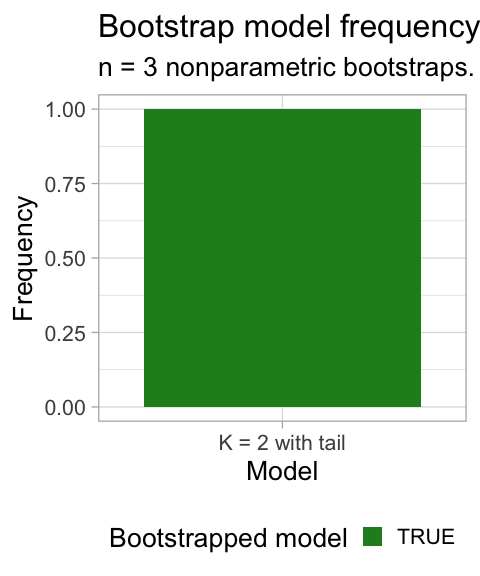

Confidence estimation via the bootstrap
Giulio Caravagna
September 2019
bootstrap.RmdThis vignette describes how to compute the bootstrap confidence of a MOBSTER model.
The MOBSTER R package is available at Github.
library(mobster)
#> [ MOBSTER - Model-based clustering in cancer ]
#> Author : Giulio Caravagna <gcaravagn@gmail.com>
#> GitHub : caravagn/mobster
#>
#> > [https://github.com/caravagn/mvMOBSTER] See package "mvmobster" for support with multi-region sequencing analyses.Bootstrapping a model
There are two types of bootstrap functions available in MOBSTER: parametric and nonparametric.
- The former samples data from the model, and re-runs the fits;
- the latter re-samples the data (with repetitions), and re-runs the fits.
In both cases a distribution of the parameter fits can be approximated, and in the case of nonparametric bootstrap also the probability of clustering together two mutations can be computed.
To speed up the computation we show this with a smaller dataset.
# Data generation
dataset = random_dataset(
N = 400,
seed = 123,
Beta_variance_scaling = 100
)
# Fit model
fit = mobster_fit(dataset$data, samples = 1)
#> [ MOBSTER fit ~ N = 400 ]
#>
#> - Beta(s) K = 1,2,3 ~ Pareto tail : ON/OFF;
#> - Fit by Moments-matching (s = 2000, i = peaks, ε = 1e-10) scoring with reICL
#> - Runs 1 x 3 x 2 = 6 with parallel
#> - Clusters filter : π > 0.02 and N > 10
#>
#>
#>
#> MOBSTER fit completed in 0.24 mins
#>
#> BEST FIT: reICL
#>
#> [ MOBSTER ] N = 400 points with K = 2 Beta clusters, fit by MM in 132 steps [CONVERGED]
#>
#> Components (fit)
#> Tail n = 107 (0.27) Shape = 3
#> Beta C1 n = 115 (0.29) Mean = 0.79
#> Beta C2 n = 178 (0.44) Mean = 0.45
#>
#> Scores (model selection)
#> NLL BIC AIC entropy ICL reduced.entropy reICL
#> -212.3238 -370.7243 -406.6475 25.51932 -345.205 20.06241 -350.6619
#> size
#> 9
# Composition with cowplot
figure = cowplot::plot_grid(
dataset$plot,
plot(fit$best),
ncol = 2,
align = 'h')
print(figure)
Now we are ready to compute n.resamples nonparametric bootstraps, and the bootstrapped statistics. We can do that using function mobster_bootstrap to which we can pass some parameters that will be forwarded to the calls of mobster_fit
# The returned object contains also the list of bootstrap resamples, and the fits.
bootstrap_results = mobster_bootstrap(
fit$best,
bootstrap = 'nonparametric',
n.resamples = 50,
epsilon = 1e-4, # forwarded to mobster_fit, optimization epsilon
K = c(1, 2), # forwarded to mobster_fit, test only models with 1 or 2 Betas
cache = NULL # forwarded to mobster_fit, no cache
)
#> [ MOBSTER bootstrap ~ 50 resamples from nonparametric bootstrap ]
#>
#> =-=-=-=-=-=-=-=-=-=-=-=-=-=-=-=-=-=-=-
#> Bootstrapping for this MOBSTER model
#> =-=-=-=-=-=-=-=-=-=-=-=-=-=-=-=-=-=-=-
#> [ MOBSTER ] N = 400 points with K = 2 Beta clusters, fit by MM in 132 steps [CONVERGED]
#>
#> Components (fit)
#> Tail n = 107 (0.27) Shape = 3
#> Beta C1 n = 115 (0.29) Mean = 0.79
#> Beta C2 n = 178 (0.44) Mean = 0.45
#>
#> Scores (model selection)
#> NLL BIC AIC entropy ICL reduced.entropy reICL
#> -212.3238 -370.7243 -406.6475 25.51932 -345.205 20.06241 -350.6619
#> size
#> 9
#>
#> =-=-=-=-=-=-=-=-=-=-=-=-=-=-=-=-=-=-=-=-=-=-
#> Creating nonparametric bootstrap resamples
#> =-=-=-=-=-=-=-=-=-=-=-=-=-=-=-=-=-=-=-=-=-=-
#>
#> =-=-=-=-=-=-=-=-=-=-=-=-=-=-=-=-=-=-=-
#> Running fits (might take some time)
#> =-=-=-=-=-=-=-=-=-=-=-=-=-=-=-=-=-=-=-The output object contains all the relevant information to analyze the results of this computation, which include the bootstrap resamples, the fits and possible errors.
# Resamples are available for inspection as list of lists,
# with a mapping to record the mutation id of the resample data.
# Ids are row numbers.
print(bootstrap_results$resamples[[1]][[1]] %>% as_tibble())
#> # A tibble: 400 x 3
#> id VAF original.id
#> <int> <dbl> <int>
#> 1 1 0.179 142
#> 2 2 0.812 51
#> 3 3 0.415 208
#> 4 4 0.515 218
#> 5 5 0.473 220
#> 6 6 0.558 152
#> 7 7 0.0736 314
#> 8 8 0.901 93
#> 9 9 0.779 75
#> 10 10 0.0725 352
#> # … with 390 more rows
# Fits are available inside the $fits list
print(bootstrap_results$fits[[1]])
#> [ MOBSTER ] N = 400 points with K = 2 Beta clusters, fit by MM in 41 steps [CONVERGED]
#>
#> Components (fit)
#> Tail n = 103 (0.26) Shape = 2.7
#> Beta C1 n = 121 (0.31) Mean = 0.79
#> Beta C2 n = 176 (0.43) Mean = 0.45
#>
#> Scores (model selection)
#> NLL BIC AIC entropy ICL reduced.entropy
#> -198.7224 -343.5217 -379.4449 24.20926 -319.3124 17.27039
#> reICL size
#> -326.2513 9
plot(bootstrap_results$fits[[1]])
Bootstrap statistics
Bootstrap statistics can be computed with MOBSTER function bootstrapped_statistics.
The time to compute these stats depends on the number of mutations in the data, and the number of bootstrap resamples. In case of a nonparmaetric bootstrap bootstrapped_statistics computes also the data co-clustering probability, defined as the probability of any pair of mutations in the data to be clustered together across resamples. This statistics is the one that takes most time, as it its complexity scales as N * N * B with N mutations and B bootstrap resamples.
Note that this probability depends on the joint resample probability of each pair of mutations, which is computable because samples are independent and uniform, and therefore each mutation is bootstrapped with probability 1/N.
# This function plots also to screen a bunch of statistics that are also returned
bootstrap_statistics = bootstrapped_statistics(
fit$best,
bootstrap_results = bootstrap_results
)
#>
#> =-=-=-=-=-=-=-=-=-=-=-=-=-=-=-=-
#> Bootstrap observations n = 50
#> =-=-=-=-=-=-=-=-=-=-=-=-=-=-=-=-
#>
#> =-=-=-=-=-=-=-=-=-=-=-=-=-=-=-
#> Bootstrapped model frequency
#> =-=-=-=-=-=-=-=-=-=-=-=-=-=-=-
#> # A tibble: 1 x 3
#> Model Frequency fit.model
#> <fct> <dbl> <lgl>
#> 1 K = 2 with tail 1 TRUE
#>
#> =-=-=-=-=-=-=-=-=-=-=-=-=-=-=-=-=-=-=-=-=-=-=-=-=-=-
#> CI (empirical quantiles from bootstrap replicates)
#> =-=-=-=-=-=-=-=-=-=-=-=-=-=-=-=-=-=-=-=-=-=-=-=-=-=-
#>
#> Mixing proportions
#> # A tibble: 3 x 8
#> cluster statistics min lower_quantile higher_quantile max fit.value
#> <chr> <chr> <dbl> <dbl> <dbl> <dbl> <dbl>
#> 1 C1 Mixing pr… 0.245 0.257 0.335 0.353 0.294
#> 2 C2 Mixing pr… 0.383 0.388 0.474 0.475 0.436
#> 3 Tail Mixing pr… 0.218 0.222 0.315 0.336 0.270
#> # … with 1 more variable: init.value <dbl>
#>
#> Tail shape/ scale
#> # A tibble: 2 x 8
#> cluster statistics min lower_quantile higher_quantile max fit.value
#> <chr> <chr> <dbl> <dbl> <dbl> <dbl> <dbl>
#> 1 Tail Scale 0.0500 0.0500 0.0504 0.0504 0.0500
#> 2 Tail Shape 2.40 2.47 3.67 3.94 2.99
#> # … with 1 more variable: init.value <dbl>
#>
#> Beta peaks
#> # A tibble: 4 x 8
#> cluster statistics min lower_quantile higher_quantile max
#> <chr> <chr> <dbl> <dbl> <dbl> <dbl>
#> 1 C1 Mean 0.774 0.776 0.808 0.815
#> 2 C1 Variance 0.00446 0.00476 0.0111 0.0120
#> 3 C2 Mean 0.430 0.436 0.461 0.467
#> 4 C2 Variance 0.00512 0.00518 0.00735 0.00753
#> # … with 2 more variables: fit.value <dbl>, init.value <dbl>
#>
#> =-=-=-=-=-=-=-=-=-=-=-=-=-=-=-=-=-=-=-=-=-=-=-=-=-=-=-=-=-=-=-=-=-=-=-
#> Bootstrapped co-clustering probability from nonparametric bootstrap
#> =-=-=-=-=-=-=-=-=-=-=-=-=-=-=-=-=-=-=-=-=-=-=-=-=-=-=-=-=-=-=-=-=-=-=-
#>
|
| | 0%
|
|= | 2%
|
|=== | 4%
|
|==== | 6%
|
|===== | 8%
|
|====== | 10%
|
|======== | 12%
|
|========= | 14%
|
|========== | 16%
|
|============ | 18%
|
|============= | 20%
|
|============== | 22%
|
|================ | 24%
|
|================= | 26%
|
|================== | 28%
|
|==================== | 30%
|
|===================== | 32%
|
|====================== | 34%
|
|======================= | 36%
|
|========================= | 38%
|
|========================== | 40%
|
|=========================== | 42%
|
|============================= | 44%
|
|============================== | 46%
|
|=============================== | 48%
|
|================================ | 50%
|
|================================== | 52%
|
|=================================== | 54%
|
|==================================== | 56%
|
|====================================== | 58%
|
|======================================= | 60%
|
|======================================== | 62%
|
|========================================== | 64%
|
|=========================================== | 66%
|
|============================================ | 68%
|
|============================================== | 70%
|
|=============================================== | 72%
|
|================================================ | 74%
|
|================================================= | 76%
|
|=================================================== | 78%
|
|==================================================== | 80%
|
|===================================================== | 82%
|
|======================================================= | 84%
|
|======================================================== | 86%
|
|========================================================= | 88%
|
|========================================================== | 90%
|
|============================================================ | 92%
|
|============================================================= | 94%
|
|============================================================== | 96%
|
|================================================================ | 98%
|
|=================================================================| 100%Object bootstrap_statistics contains several tibbles that aggregate the data, and for each one of them there is a MOBSTER function to plot the data.
# All bootstrapped values
print(bootstrap_statistics$bootstrap_values)
#> # A tibble: 750 x 5
#> cluster statistics fit.value init.value resample
#> <chr> <chr> <dbl> <dbl> <int>
#> 1 Tail Shape 2.70 4.50 1
#> 2 Tail Scale 0.0504 0.0504 1
#> 3 Tail Mean 0.0800 0.0648 1
#> 4 Tail Variance 0.00338 0.000374 1
#> 5 C2 a 18.6 31.1 1
#> 6 C2 b 22.6 31.1 1
#> 7 C2 Mean 0.451 0.302 1
#> 8 C2 Variance 0.00586 0.00202 1
#> 9 C1 a 19.4 22.8 1
#> 10 C1 b 5.27 22.8 1
#> # … with 740 more rows
# The model probability
print(bootstrap_statistics$bootstrap_model)
#> # A tibble: 1 x 3
#> Model Frequency fit.model
#> <fct> <dbl> <lgl>
#> 1 K = 2 with tail 1 TRUE
# The parameter stastics
print(bootstrap_statistics$bootstrap_statistics)
#> # A tibble: 15 x 8
#> cluster statistics min lower_quantile higher_quantile max
#> <chr> <chr> <dbl> <dbl> <dbl> <dbl>
#> 1 C1 a 1.04e+1 11.3 25.7 2.86e+1
#> 2 C1 b 2.93e+0 3.08 6.20 7.60e+0
#> 3 C1 Mean 7.74e-1 0.776 0.808 8.15e-1
#> 4 C1 Mixing pr… 2.45e-1 0.257 0.335 3.53e-1
#> 5 C1 Variance 4.46e-3 0.00476 0.0111 1.20e-2
#> 6 C2 a 1.45e+1 14.8 21.2 2.16e+1
#> 7 C2 b 1.74e+1 17.9 25.7 2.58e+1
#> 8 C2 Mean 4.30e-1 0.436 0.461 4.67e-1
#> 9 C2 Mixing pr… 3.83e-1 0.388 0.474 4.75e-1
#> 10 C2 Variance 5.12e-3 0.00518 0.00735 7.53e-3
#> 11 Tail Mean 6.74e-2 0.0690 0.0842 8.62e-2
#> 12 Tail Mixing pr… 2.18e-1 0.222 0.315 3.36e-1
#> 13 Tail Scale 5.00e-2 0.0500 0.0504 5.04e-2
#> 14 Tail Shape 2.40e+0 2.47 3.67 3.94e+0
#> 15 Tail Variance 5.95e-4 0.000780 0.00619 7.73e-3
#> # … with 2 more variables: fit.value <dbl>, init.value <dbl>Bootstrapping, one can plot the model probability across re-samples as a barplot

Similarly, one can compute the parameter probabilities across re-samples, which we here aggregate as a figure.
# Plot the mixing proportions
mplot = plot_bootstrap_mixing_proportions(
fit$best,
bootstrap_results = bootstrap_results,
bootstrap_statistics = bootstrap_statistics
)
# Plot the tail parameters
tplot = plot_bootstrap_tail(
fit$best,
bootstrap_results = bootstrap_results,
bootstrap_statistics = bootstrap_statistics
)
# Plot the Beta parameters
bplot = plot_bootstrap_Beta(
fit$best,
bootstrap_results = bootstrap_results,
bootstrap_statistics = bootstrap_statistics
)
#> Warning: Removed 4 rows containing missing values (geom_bar).
#> Warning: Removed 4 rows containing missing values (geom_bar).
# Figure
figure = ggarrange(
mplot,
tplot,
bplot,
ncol = 3, nrow = 1,
widths = c(.7, 1, 1)
)
print(figure)
Bcause this is a nonparametric bootstrap run, the co-clustering probability can be plot as well
plot_bootstrap_coclustering(
fit$best,
bootstrap_results = bootstrap_results,
bootstrap_statistics = bootstrap_statistics
)